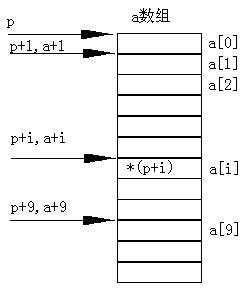

C语言规定：如果指针变量p已指向数组中的一个元素，则p+1指向同一数组中的下一个元素。
引入指针变量后，就可以用两种方法来访问数组元素了。
如果p的初值为&a[0],则：
1) p+i和a+i就是a[i]的地址，或者说它们指向a数组的第i个元素。

2) *(p+i)或*(a+i)就是p+i或a+i所指向的数组元素，即a[i]。例如，*(p+5)或*(a+5)就是a[5]。
3) 指向数组的指针变量也可以带下标，如p[i]与*(p+i)等价。
根据以上叙述，引用一个数组元素可以用：
1) 下标法，即用a[i]形式访问数组元素。在前面介绍数组时都是采用这种方法。
2) 指针法，即采用*(a+i)或*(p+i)形式，用间接访问的方法来访问数组元素，其中a是数组名，p是指向数组的指针变量，其处值p=a。
main(){
int a[10],i;
for(i=0;i<10;i++)
a[i]=i;
for(i=0;i<5;i++)
printf("a[%d]=%d\n",i,a[i]);
}
main(){
int a[10],i;
for(i=0;i<10;i++)
*(a+i)=i;
for(i=0;i<10;i++)
printf("a[%d]=%d\n",i,*(a+i));
}
main(){
int a[10],I,*p;
p=a;
for(i=0;i<10;i++)
*(p+i)=i;
for(i=0;i<10;i++)
printf("a[%d]=%d\n",i,*(p+i));
}
main(){
int a[10],i,*p=a;
for(i=0;i<10;){
*p=i;
printf("a[%d]=%d\n",i++,*p++);
}
}
1) 指针变量可以实现本身的值的改变。如p++是合法的；而a++是错误的。因为a是数组名，它是数组的首地址，是常量。
2) 要注意指针变量的当前值。请看下面的程序。
main(){
int *p,i,a[10];
p=a;
for(i=0;i<10;i++)
*p++=i;
for(i=0;i<10;i++)
printf("a[%d]=%d\n",i,*p++);
}
main(){
int *p,i,a[10];
p=a;
for(i=0;i<10;i++){
*p++=i;
p=a;
for(i=0;i<10;i++)
printf("a[%d]=%d\n",i,*p++);}
}
3) 从上例可以看出，虽然定义数组时指定它包含10个元素，但指针变量可以指到数组以后的内存单元，系统并不认为非法。
4) *p++，由于++和*同优先级，结合方向自右而左，等价于*(p++)。
5) *(p++)与*(++p)作用不同。若p的初值为a，则*(p++)等价a[0]，*(++p)等价a[1]。
6) (*p)++表示p所指向的元素值加1。
7) 如果p当前指向a数组中的第i个元素，则
*(p--)相当于a[i--]； *(++p)相当于a[++i]； *(--p)相当于a[--i]。